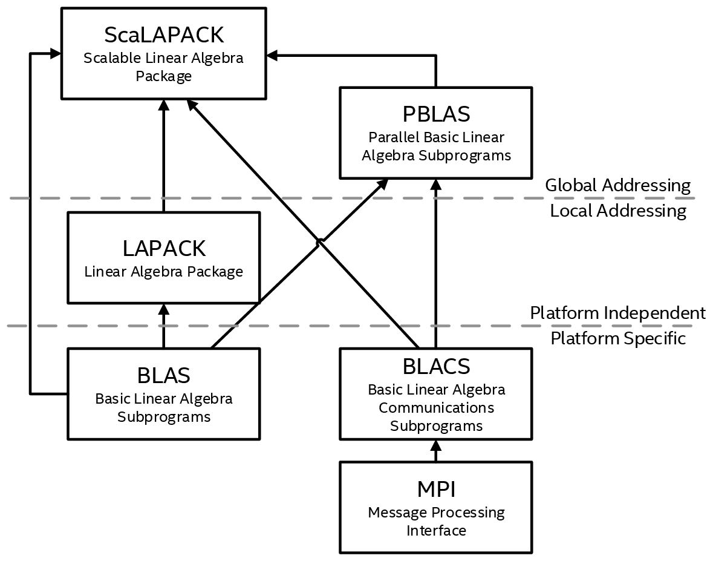

Intel® oneAPI Math Kernel Library Developer Reference - Fortran
The model of the computing environment for ScaLAPACK is represented as a one-dimensional array of processes (for operations on band or tridiagonal matrices) or also a two-dimensional process grid (for operations on dense matrices). To use ScaLAPACK, all global matrices or vectors should be distributed on this array or grid prior to calling the ScaLAPACK routines.
ScaLAPACK is closely tied to other components, including BLAS, BLACS, LAPACK, and PBLAS.
